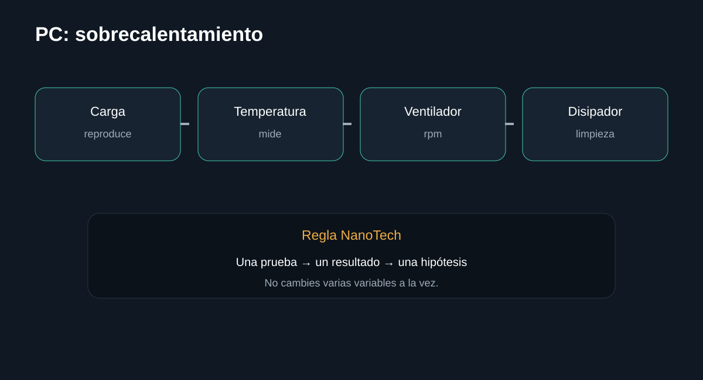

Introducción

Diagnóstico ordenado de temperatura, ventilación, ventilador, disipador y carga. La guía busca que puedas separar causas antes de sustituir componentes.
Antes de empezar: seguridad
Desconecta el equipo cuando corresponda y no realices mediciones peligrosas sin formación e instrumental. En baterías, fuentes y placas, detén el procedimiento si detectas daño físico, líquido, olor extraño o calor anormal.
- Documenta el estado inicial.
- Haz una sola modificación cada vez.
- Conserva tornillos, cables y configuración original.
Herramientas
1. Reproducir el fallo
El patrón temporal ayuda a separar temperatura de alimentación.
Qué hacer
- Registra cuándo se apaga.
- Observa si ocurre solo bajo carga.
- No mantengas una prueba si la temperatura alcanza niveles peligrosos.
Registra el resultado antes de continuar.
InterpretaciónEl patrón temporal ayuda a separar temperatura de alimentación.
2. Medir temperaturas
Necesitas datos, no sensación de calor.
Qué hacer
- Usa sensores del sistema o software confiable.
- Registra reposo y carga.
- Compara con especificaciones del fabricante.
Registra el resultado antes de continuar.
InterpretaciónNecesitas datos, no sensación de calor.
3. Revisar flujo de aire
La obstrucción reduce la capacidad de disipación.
Qué hacer
- Comprueba entradas y salidas.
- Limpia polvo con el equipo apagado.
- Verifica que los ventiladores giren correctamente.
Registra el resultado antes de continuar.
InterpretaciónLa obstrucción reduce la capacidad de disipación.
4. Revisar sistema térmico
Si el problema persiste, inspecciona disipador y contacto térmico.
Qué hacer
- Comprueba montaje.
- Si desmontas, sustituye pasta térmica según procedimiento del fabricante.
- No aprietes tornillos de forma desigual.
Registra el resultado antes de continuar.
InterpretaciónSi el problema persiste, inspecciona disipador y contacto térmico.
Diagnóstico final
Fuentes y notas
No existe una temperatura universal segura para todos los procesadores. Usa los límites y recomendaciones del fabricante del CPU/GPU.